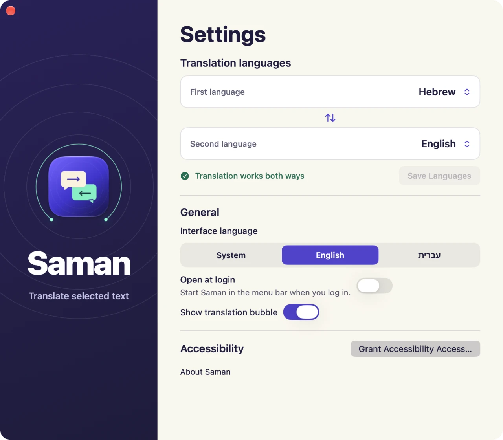

תרגום מקומי ל־macOS
תרגום טקסט
מכל אפליקציה.
סמנו טקסט בדפדפן, במסמך או בצ׳אט ולחצו על הבועה הסגולה כדי לראות את התרגום לידו. אפשר גם להעתיק טקסט ולתרגם אותו דרך שורת התפריטים.
Apple Silicon · macOS 27 ומעלה

שתי שפות.
תרגום בשני הכיוונים.
בחרו שתי שפות נתמכות. סמן מזהה באיזו שפה כתוב הטקסט המסומן ומתרגמת אותו לשפה השנייה. אפשר להפוך את הכיוון בחלונית התרגום.
בהגדרות אפשר לשנות את שפות התרגום, לבחור ממשק בעברית או באנגלית ולהגדיר פתיחה בכניסה למק.

מתרגמים בקיצור מקלדת.
הקיצור עובד בכל מקום שבו סמן יכולה לקרוא את הבחירה. אפשר לגרור את חלונית התרגום הצידה או להעתיק את התוצאה.
הטקסט נשאר על המק.
סמן מתרגמת את הטקסט על המק באמצעות מנוע התרגום של Apple.
מתחילים במק.
פותחים את סמן
מורידים ומחלצים את ה־ZIP ופותחים את Saman.app. בהפעלה הראשונה סמן יכולה להעתיק את עצמה לתיקיית יישומים.
בוחרים שתי שפות
בחרו את השפות שתרצו לתרגם ביניהן. בהפעלה הראשונה macOS עשויה לבקש להוריד את מודלי השפה.
מאשרים נגישות
האישור מאפשר לסמן לקרוא את הטקסט המסומן. סמנו טקסט ולחצו על הבועה הסגולה או על ⌥⇧T.
הגרסה הנוכחית חתומה מקומית, ללא נוטריזציה של Apple. אם macOS חוסמת את הפתיחה הראשונה והקובץ הגיע ממקור שאתם סומכים עליו, אפשר להיעזר בהנחיות של Apple. הנחיות Apple.
שאלות נפוצות
למה צריך הרשאת נגישות?
ההרשאה מאפשרת לסמן לקרוא טקסט מסומן ולהציב לידו את הבועה. אפשר לתרגם טקסט שהועתק גם בלי ההרשאה.
מה עושים אם הבועה לא מופיעה?
חלק מהאפליקציות לא חושפות טקסט מסומן דרך ממשקי הנגישות. העתיקו אותו ובחרו ״תרגום הטקסט שהועתק״ בתפריט של סמן.
אפשר לבנות את סמן מתוך הקוד?
כן. במאגר נמצאים קוד ה־Swift, סקריפטים לבנייה והנחיות לתרומה לפרויקט. תרומה לפרויקט ב־GitHub.